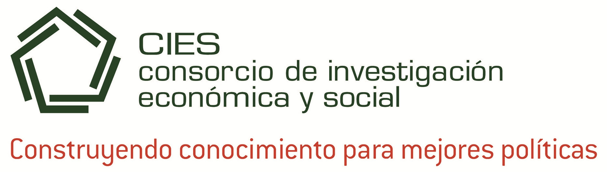

También puedes ver mi currículum más detallado en LinkedIn: https://www.linkedin.com/in/cornejocastellano
Experiencia
| Organización |
Link |
Rol |
Fechas |
Lugar |
 |
Vestas |
Construction Quality Deployment Lead |
2025 – Hoy |
Madrid, España |
 |
World Vision |
Analista Nacional de Manejo de la Información |
2024 – 2025 |
Lima, Perú |
|
Vestas |
Data Management Trainee |
2023 |
Madrid, España |
|  |
Consorcio de Investigación Económica y Social |
Gestora de Bases de Datos de Monitoreo y Evaluación |
2019 – 2021 |
Lima, Perú |
|
Pontificia Universidad Católica del Perú |
Asistente de Investigación |
2018 – 2021 |
Lima, Perú |
|
Fondazione l'Albero della Vita |
Pasante |
2018 |
Lima, Perú |
Educación
| Institución |
Link |
Grado |
Fechas |
|
Universidad Carlos III de Madrid |
Máster Universitario en Ciencias Sociales Computacionales |
2024 |
|
Pontificia Universidad Católica del Perú |
Diplomado en Ciencia de Datos para las Ciencias Sociales y la Gestión Pública |
2021-2022 |
|
Universidad ESAN |
Diplomado en Monitoreo y Evaluación de Programas y Proyectos |
2024 |
|
Pontificia Universidad Católica del Perú |
Bachiller en Comunicación para el Desarrollo |
2021-2022 |
Publicaciones
| Portada |
Título |
Referencia |
Publisher |
 |
Exploring terrorism in Peru: a spatial approach |
Cornejo Castellano, C. (2023) |
Universidad Carlos III de Madrid |
|
Guía para elaborar investigaciones periodísticas sobre trata de personas (supervisión editorial)
|
Fernández, L. (2021)
|
Consorcio de Investigación Económica y Social |
 |
Violencia de género ejercida en el ámbito familiar contra niños, niñas y adolescentes percibidos como parte de la población LGTBI |
Huaita Alegre, M., Chavez Granda, J.,Cornejo Castellano, G. & Saravia Pinazo, M. (2019) |
Poder Judicial del Perú |
 |
La ratificación de la CEDAW como hito en la lucha por los derechos de las mujeres en el Perú |
Huaita Alegre, M., & Cornejo Castellano, G.(2019). |
Ius et Veritas |
 |
Igualdad para construir democracia. Análisis de candidaturas LGTBI en los procesos electorales de 2006 a 2016 |
Alza, Carlos, et.al. (2017). |
Jurado Nacional de Elecciones y Observatorio de Políticas Públicas para la Diversidad Sexual (DISEX), PUCP |